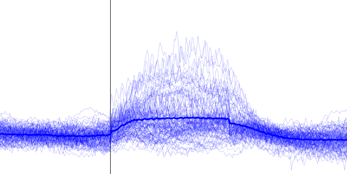

- Save to .FIG: saves individual plots in Matlab's .fig file format
- Export: exports individual plots to one of the following image file formats: .PNG (24-bit), .JPEG (24-bit), .PDF or .EPS
Note
Each plot will be saved in a separate file with a name composed of a string and the name of the ROI appended with an underscore (FILENAME_AXIS-TITLE).
- Select: launches the data selection tool. This tool allows one to determine how the data is displayed in the axes.
- Run hypothesis test: executes statistical comparisons on the data from each plot.
Note
Click here for more information on how the toolbox performs hypothesis tests on data!
Note
For scalar datasets, the Line/Box plot tool will display the data as the amplitude of different experimental groups as a function of the acquisition index with each axis containing the data of one observation (as the example shown in the figure above). For time series, the X axis will display the temporal profile of the dataset instead.
- X/Y label: Text fields with main figure's axis labels
- Group plot type dropdown menu >> For scalar data ONLY:
- Error bar: Shows error bars with group average ± variation (see variation type panel options below)
- Box plot: Shows a box plot per group per X data value with the following measures:
Here, the interquartile range is the range between the 25th (q1) and 75th (q3) percentiles while the upper and lower adjacent values are the highest and lowest value that fall inside the whiskers' lengths. The lengths of the upper and lower whiskers are calculated as follows : upper_whisker_lenght = q3 + 1.5 × (q3 – q1) and lower_whisker_length = q1 – 1.5 × (q3 – q1)
- Y limits panel
- Auto: sets automatic Y limits for each individual plot (default)
- Uniform: sets the same Y axis limits to all plots
- Fixed: set Y limits to all plots using the min and max values
- Linear: sets the Y scale as linear (default)
- Log: sets the Y scale as logarithmic
- X axis options panel
Available for scalar data only.
- No jitter - categorical: places the group data side by side around each X data point (categorical) with the scatter dots vertically aligned (default)
- Jitter - categorical: similar to the option above but the scatted dots are randomly distributed around the X data point (i.e. jitter)
- Continous: considers the data as continuous and overlaps the scatter dots and error bars of all groups over the X data points. Here, a line plot is shown linking a the error bars of a group. Boxplot not available for this option
- Variation type panel
Not available for box plots.
- Standard deviation (SD): Sets the error bar as standard deviation (default)
- Standard error of the mean (SEM): Sets the error bar as SEM
- 95% Confidence Interval (CI)Sets the error bar as 95% CI of the mean. Available with Statistics and Machine Learning Toolbox
- Time vector style panel
Available for time vector data only.
- Shaded: Shows the data variation as shaded area around the average line:

- Lines: Shows the individual traces as thinner lines:

- Shaded: Shows the data variation as shaded area around the average line:
Tip
The X and Y labels have the Interpreter property set to Tex. This allows one to add special characters. For instance, the text \DeltaF/F (x100) will be displayed as ΔF/F(x100).